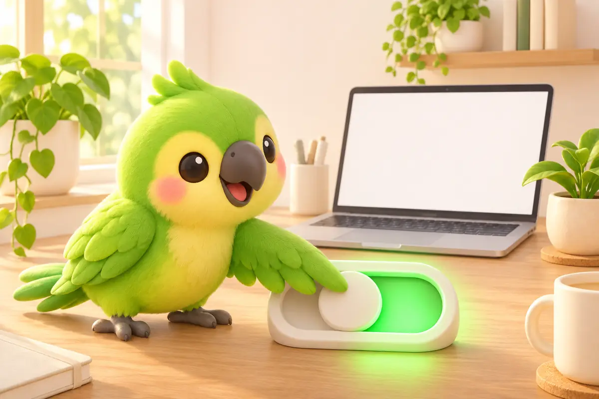

用 iPhone 相机扫描学舌鸟 iPhone 键盘 · ¥38 买断
用 iPhone 相机扫描学舌鸟 iPhone 键盘 · ¥38 买断
我是 Sona Orbit，一个人开发学舌鸟的独立开发者。学舌鸟是我做的免费 Mac 语音输入工具，所以第 6 节会提到它。内置听写的步骤和限制都照 Apple 官方说明（在 Mac 上听写信息和文稿、如果听写未按预期工作、macOS 功能适用范围），查证日期是 2026 年 11 月 16 日。不同版本的 macOS 菜单位置可能略有不同，请以你的界面为准。学舌鸟的功能与菜单名称以 0.4.20 为准。
1. 先看结论：三个步骤打开
- 打开开关。苹果菜单 →“系统设置”→ 侧边栏的“键盘”→ 找到“听写”，把它打开，再按“启用”。
- 选快捷键和语言。同一个地方有“快捷键”和“语言”。语言按“编辑”，勾选你要说的中文。
- 到任何输入框试一次。把光标放在备忘录或消息的输入框，按快捷键，光标高亮跳动或听到提示声后开始说话。说完按 Esc。
偶尔讲一两句，做到这里就够了。下面几节是每一步的细节，以及遇到问题时怎么查。
2. 打开 macOS 内置听写
照 Apple 的说明，完整步骤如下。
- 按屏幕左上角的苹果菜单，选“系统设置”。
- 在左边侧边栏按“键盘”。项目很多，可能要往下滚动才看得到。
- 在右边找到“听写”，把开关打开，跳出确认窗口时按“启用”。
- 系统可能会问要不要共享录音来改进 Siri 和听写。想共享按“共享录音”，不想就按“以后”。两种选择都能正常听写。
之后想改变主意，可以到“系统设置 → 隐私与安全性 → 分析与改进”，开关叫“改进 Siri 与听写”。
macOS 12 或更早的版本没有“系统设置”，同样的开关在“系统偏好设置 → 键盘 → 听写”。
有一种情况会让听写打不开。Apple 的说明写到，“语音控制”（辅助功能里用声音操作整台 Mac 的功能）开着的时候，标准的听写不能用，文字要改由语音控制来听写。

3. 开始和停止：快捷键怎么设
打开听写后，有三种方式可以开始说话。
- 麦克风键。键盘最上面那排如果有麦克风图标的按键，按一下再放开就开始听写。要注意是“按一下”，按住不放会叫出 Siri。
- 听写快捷键。在“键盘”设置的“听写”区，按“快捷键”菜单挑一个。清单里没有喜欢的，选“自定义”再按下你要的组合，Apple 举的例子是 Option + Z。
- 菜单。在大部分 App 的菜单栏选“编辑 → 开始听写”。
光标高亮并跳动，或听到提示声，就可以开始说。说完有三种停法：按 Esc、再按一次麦克风键，或再按一次听写快捷键。什么都不按的话，安静 30 秒后听写会自己停。
在 Apple 芯片的 Mac 上，听写中可以直接用键盘打字，不必先停下来；你停止打字后可以接着说。
识别结果里有蓝色下划线的字，代表系统不太确定。按一下那个字可以选其他候选，也可以直接重打。
4. 中文怎么说：语言、标点、换行
加入中文
在“键盘”设置的“听写”区，按“语言”旁边的“编辑”，勾选你要用的语言和地区。可以同时勾好几种，例如普通话（台湾）和英文。听写时光标旁会显示目前的语言，按一下就能切换；键盘有地球仪键的话，也可以按地球仪键选。
听写会照目前选的语言识别，要换语言得自己切。
标点
在 Apple 的功能清单里，“自动加标点”支持普通话（台湾）。也就是说，逗号、句号和问号会自动加上。不想要的话，到同一个设置区把“自动标点符号”关掉。
其他符号要用说的，例如说“感叹号”。表情符号也可以，例如“心形表情符号”。
换行和分段
| 说出 | 效果 |
|---|---|
| 新行 | 等于按一次 Return |
| 新段落 | 等于按两次 Return |
换行和新段落会在你说完、结束听写时才出现。完整的指令清单在 Apple 的听写文字的指令。
声音会不会上传
Apple 的功能清单把“设备端听写”支持的语言另外列出来。我查的时候，清单里有普通话（中国大陆）和粤语（香港），没有普通话（台湾）。所以用台湾的普通话听写，要先假设需要网络。最准的确认方法是看你自己的 Mac。打开听写后，“键盘”设置里“听写”下方有一段文字，会写你的语音是在设备上处理还是送到服务器。

5. 开不起来？照这张清单检查
按了快捷键没反应，或说了话没有字，照 Apple 的排障说明由上往下查：
| 状况 | 先检查 |
|---|---|
| 按快捷键没反应 | “键盘”设置里的“听写”有没有开；你按的是不是设置里选的那组快捷键；“语音控制”是不是开着 |
| 按麦克风键跑出 Siri | 按太久了。按一下就放开才是听写 |
| 有反应但没有字 | “麦克风来源”选的是不是你正在用的麦克风。台式机没有内置麦克风，要接外接麦克风并在“声音”或“键盘”设置选它 |
| 字出得断断续续 | 到“系统设置 → 声音 → 输入”看输入音量够不够；麦克风有没有被衣服或东西挡住；环境太吵时改用耳机麦克风 |
| 出来的字完全不对 | 听写语言是不是选成别的语言。光标旁会显示目前语言 |
| 突然不能用 | 网络有没有断。到“系统设置 → 网络”确认 |
| 说到一半自己停了 | 安静 30 秒会自动停止，再按一次快捷键继续 |

6. 想离线、想长时间用：另外装语音输入工具
内置听写免安装，偶尔说几句很合适。下面几种情况，可以考虑另外装一个语音输入工具：
- 想在没有网络的地方用中文语音输入，或不希望声音离开 Mac。
- 一句话里中英夹杂，不想一直切语言。
- 同事的名字、产品名老是被听错，想要有地方把正确写法记下来。
- 想要“按住说、放开就粘贴”的节奏。
这类工具有好几款，付费和免费都有，我在7 款 Mac 语音输入比较里整理过。这里用我自己做的学舌鸟当例子，说明这类工具“怎么开”。跟内置听写比，多了权限和下载模型两步：
- 安装。打开下载的 dmg，把学舌鸟拖进“应用程序”文件夹，再从“应用程序”打开。
- 给两个权限。第一次打开会带你到系统设置允许“麦克风”和“辅助使用”。麦克风用来收音；辅助使用让它把文字粘贴到你正在用的 App，也用来接收快捷键。
- 下载语音模型。选一个模型下载。下载一次就好，之后识别在这台 Mac 上进行，没有网络也能听写。
- 试一次。引导界面会请你按住快捷键说“测试一下”，一次确认热键、麦克风、识别、粘贴四项都正常。
默认快捷键是 右 ⌥ ＋ 右 ⌘。按住说话，放开后文字粘贴到光标位置；轻按一下则会持续听，再轻按一次结束；Esc 取消。外接键盘没有右边的 ⌥ 或 ⌘，可以到“设置 → 说话 → 快捷键”换别的组合。
两者的差别整理成一张表。
| macOS 内置听写 | 学舌鸟 | |
|---|---|---|
| 安装 | 不用，系统内置 | 下载 dmg，另外下载语音模型 |
| 费用 | 免费 | 免费 |
| 适用的 Mac | Intel 和 Apple 芯片都有 | 只支持 Apple 芯片，macOS 11 以上 |
| 台湾的普通话 | 不在设备端听写的语言清单里 | 在 Mac 本机识别，离线可用 |
| 标点 | 自动加逗号、句号、问号；其他用说的 | 本机补全形标点和中英文之间的空格 |
| 听错的专有名词 | 手动改 | 可以加进个人词典 |
| 换行 | 说“新行”或“新段落” | 有“粘贴后自动换行”开关，每段结尾自动换一行 |
想了解模型怎么挑，可以看Mac 本机语音识别模型怎么选；人名和术语老是错，看从词典到专属语音模型的三层解法。开了之后的日常用法，例如整理口语和翻译，在Mac 中文语音输入怎么用。
7. 常见问题
Mac 语音输入的开关在哪里？
在苹果菜单 →“系统设置”→ 侧边栏的“键盘”→“听写”。打开后按“启用”。macOS 12 或更早的版本在“系统偏好设置 → 键盘 → 听写”。
我的键盘没有麦克风键，怎么开始听写？
到“键盘”设置的“听写”区，在“快捷键”菜单选一组，或选“自定义”按下自己要的组合。也可以在 App 的菜单栏选“编辑 → 开始听写”。
Mac 内置听写可以离线用中文吗？
要看语言。Apple 的功能清单里，设备端听写有普通话（中国大陆）和粤语（香港），我在 2026 年 11 月查的时候没有普通话（台湾）。实际情况请看你的“键盘”设置里“听写”下方的说明文字。
听写为什么讲到一半会停？
Apple 的说明写到，检测不到语音达 30 秒就会自动停止。再按一次快捷键或麦克风键就能继续。
为什么听写的开关打不开或没有作用？
先看“语音控制”是不是开着。语音控制开启时，标准的听写不能用。其他常见原因是快捷键按错、麦克风来源选错，或网络断线。